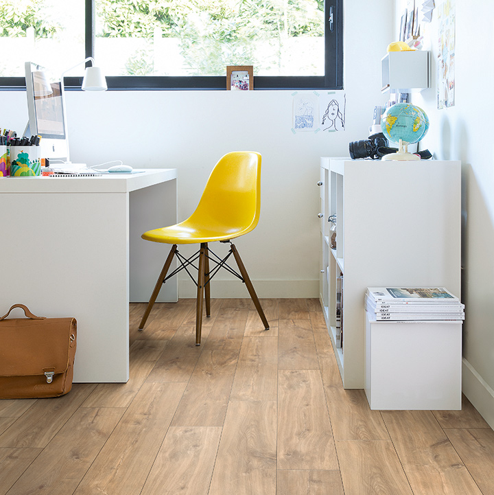
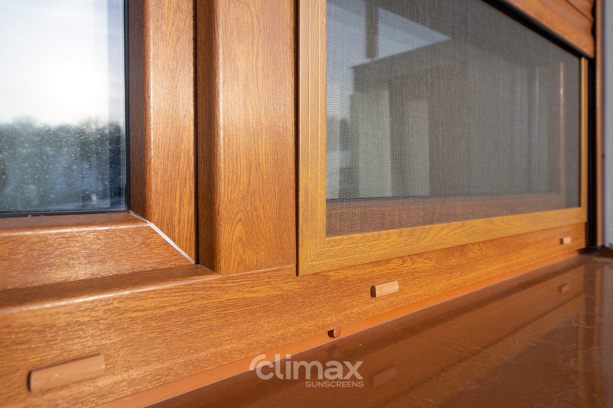
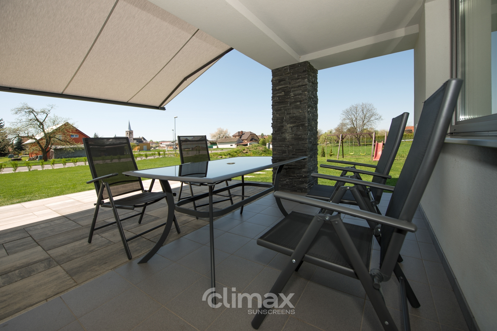

Naše služby
Prvotřídní stínící technika pro váš domov nebo pracovní prostor.
Naše interiérové studio nabízí stínící techniku prvotřídních značek CLIMAX a VELUX, která je vyrobena z kvalitních materiálů a dodává vašemu domovu nebo pracovnímu prostoru skvělý vzhled a funkčnost.
Ať už si přejete moderní minimalistický design nebo klasický a elegantní vzhled, naše stínící technika vám umožní dosáhnout požadované atmosféry.
Nezávazná poptávka
Kompletní nabídka pro vnitřní i venkovní stínění.
Hliníkové i látkové žaluzie pro přesnou regulaci světla a soukromí. Dostupné ve stovkách barev a dezénů.
Roller blinds, plisé a den-noc rolety — elegantní a funkční řešení pro okna každého tvaru.
Efektivní ochrana před sluncem, větrem i nežádoucím vstupem. Manuální i motorové provedení.
Kazetové, výsuvné a kloubové markýzy pro terasy a balkony. Pergoly s nastavitelnou lamelovou střechou.

Nedílnou součástí každého interiéru jsou také sítě proti hmyzu. Nabízíme celou řadu provedení pro okna i dveře:
Kazetové markýzy jsou moderní a elegantní řešení pro stínění teras a balkónů. Látka je v klidové poloze schována v kazetovém krytu, který ji chrání před nečasem.
Dostupné v manuálním i motorovém provedení s dálkovým ovládáním nebo chytrým domem. Bohatý výběr barev a dezénů látek.
